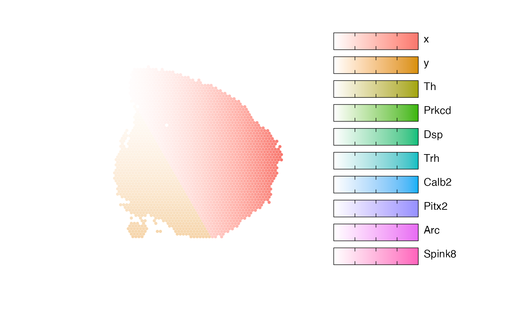
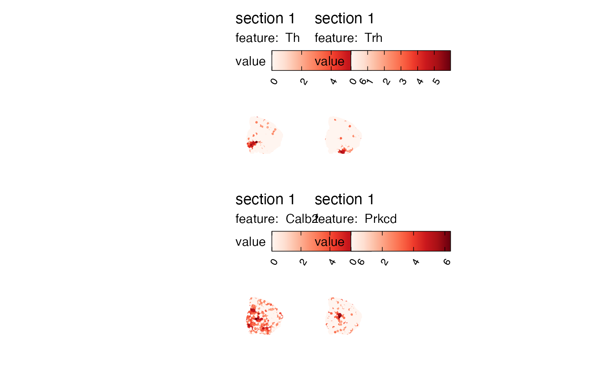
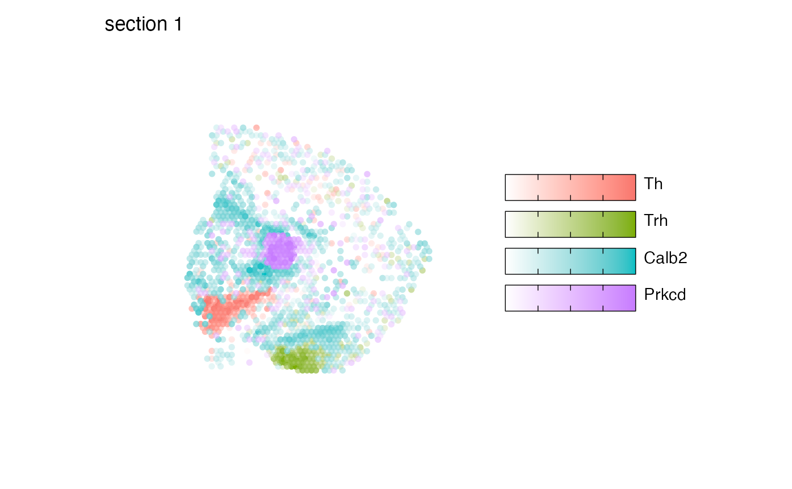

Map numeric features or categorical labels
visualize-multiple-features.RdMapMultipleFeatures can be used to map multiple numeric feature on the
same tissue section(s). MapFeatures provides an option to map 2 or 3
features using RGB color blending, whereas MapMultipleFeatures can handle
more than 3 features. See details below for more information.
Usage
MapMultipleFeatures(object, ...)
# Default S3 method
MapMultipleFeatures(
object,
dims,
spot_side = NULL,
scale = c("shared", "free"),
crop_area = NULL,
pt_size = 1,
shape = "point",
pt_stroke = 0,
section_number = NULL,
label_by = NULL,
ncol = NULL,
colors = NULL,
coords_columns = c("pxl_col_in_fullres", "pxl_row_in_fullres"),
return_plot_list = FALSE,
add_colorscale_text = FALSE,
...
)
# S3 method for class 'Seurat'
MapMultipleFeatures(
object,
features,
scale = c("free", "shared"),
slot = "data",
image_use = NULL,
coords_use = "raw",
crop_area = NULL,
pt_size = 1,
pt_stroke = 0,
shape = "point",
spot_side = NULL,
section_number = NULL,
label_by = NULL,
ncol = NULL,
colors = NULL,
override_plot_dims = FALSE,
max_cutoff = NULL,
min_cutoff = NULL,
return_plot_list = FALSE,
add_colorscale_text = FALSE,
...
)Arguments
- object
An object
- ...
Arguments passed to other methods
- dims
A tibble with information about the tissue sections. This information is used to determine the limits of the plot area. If
dimsis not provided, the limits will be computed directly from the spatial coordinates provided inobject.- spot_side
A numeric value or vector of values specifying the size of the spots in pixels in the fullres image. Relevant for
"tile"shape. Will default to each section's value retrieved via GetScaleFactors:GetScaleFactors()$spot_diameter_fullres).- scale
A string specifying a scaling mode. See details below
- crop_area
A numeric vector of length 4 specifying a rectangular area to crop the plots by. These numbers should be within 0-1. The x-axis is goes from left=0 to right=1 and the y axis is goes from top=0 to bottom=1. The order of the values are specified as follows:
crop_area = c(left, top, right, bottom). The crop area will be used on all tissue sections and cannot be set for each section individually. using crop areas of different sizes on different sections can lead to unwanted side effects as the point sizes will remain constant. In this case it is better to generate separate plots for different tissue sections.- pt_size
A numeric value specifying the point size passed to
geom_point- shape
A string specifying the shape to plot. Options are:
c("point", "raster", "tile").- pt_stroke
A numeric specifying the point stroke width
- section_number
An integer select a tissue section number to subset data by
- label_by
Character of length 1 providing a column name in
objectwith labels that can be used to provide a title for each subplot. This column should have 1 label per tissue section. This can be useful when you need to provide more detailed information about your tissue sections.- ncol
Integer value specifying the number of columns in the output patchwork. This parameter will only have an effect when the number of features provided is 1. Otherwise, the patchwork will be arranged based on the
arrange_featuresparameter.- colors
A character vector of colors to use for the color scale. The colors should preferably consist of a set of colors from a scientific color palette designed for sequential data. Some useful palettes are available in the
RColorBrewer,viridisandscicoR packages.- coords_columns
a character vector of length 2 specifying the names of the columns in
objectholding the spatial coordinates- return_plot_list
A logical specifying if a
patchworkor a list ofggplotobjects should be returned. By default, apatchworkis returned, but it can sometimes be useful to obtain the list ofggplotobjects if you want to manipulate each sub plot independently.- add_colorscale_text
A Logical specifying if labels should be added to the color scales. The labels will be values from 0 to 1 ("low" to "high") and the meaning of these values depend on the choice of
scale- features
A character vector of features to plot. These features need to be fetchable with
link{FetchData}- slot
Slot to pull features values from
- image_use
A character specifying image type to use
- coords_use
A character specifying coordinate type to use
- override_plot_dims
A logical specifying whether the image dimensions should be used to define the plot area. Setting
override_plot_dimscan be useful in situations where the tissue section only covers a small fraction of the capture area, which will create a lot of white space in the plots.- min_cutoff, max_cutoff
A numeric value between 0-1 specifying either a lower (
min_cutoff) or upper (max_cutoff) limit for the data usingquantile. These arguments can be useful to make sure that the color map doesn't get dominated by outliers.
Details
RGB color blending is only possible with 2 or 3 features. To visualize more than 3 colors in the same plot, we can instead assign a specific color to each spot depending on what feature has the highest value. This means that only the "dominant" feature will be shown in each spot.
Before using MapMultipleFeatures, you should be aware that this type of visualization
will bias what is being shown. Preferably, the selected features should be selecting in
a way that they are mutually exclusive, i.e. expressed in different spatial locations.
Each spot is assigned one color determined by the dominant feature in that spot. For instance, if cell type proportions are selected for the visualization, each cell type will be assigned a specific color. Then, the cell type with the highest proportion value will determine the spot color
The values of the selected features will be rescaled for the visualization
depending on the choice of scale. If scale="free", each numeric feature
will be scaled independently across the entire data set to have values ranging from 0 to 1.
This is most useful if the selected features have different scales and you want to
avoid some features dominating in many spots.
If you want to keep the relative differences between different feature, you can set
scale="shared". In this case, the feature values will be scaled to have values
between 0 and 1 where 0 and 1 corresponds to the minimum and maximum value across
all feature values. This could for example be useful if you are visualizing cell type
proportions in which case the color intensity should reflect the relative differences.
The visualization produced with MapMultipleFeatures should be used with some caution. Because only 1 color
is selected for each spot, it is biased to focus on dominant features.
This makes it less meaningful to focus on the exact values and makes the interpretation
more qualitative. It can however be useful as a way to summarize the spatial distribution
of features that are expressed in different regions. It is best to map such features with
MapFeatures first, before attempting to summarize them in one plot.
See also
Other spatial-visualization-methods:
AnglePlot(),
FeatureViewer(),
ImagePlot(),
MapFeatures(),
MapFeaturesSummary(),
MapLabels(),
MapLabelsSummary()
Other spatial-visualization-methods:
AnglePlot(),
FeatureViewer(),
ImagePlot(),
MapFeatures(),
MapFeaturesSummary(),
MapLabels(),
MapLabelsSummary()
Examples
library(semla)
se_mbrain <- readRDS(system.file("extdata/mousebrain", "se_mbrain", package = "semla"))
# Map multiple features with non-overlapping expression patterns
selected_features <- c("Th", "Prkcd", "Dsp", "Trh",
"Calb2", "Pitx2", "Arc", "Spink8")
# Construct tibble with coordinates and feature values
data_use <- bind_cols(GetStaffli(se_mbrain)@meta_data,
FetchData(se_mbrain, vars = selected_features))
# Construct a dims tibble
dims <- GetStaffli(se_mbrain)@image_info
# Composite plot
MapMultipleFeatures(data_use, dims = dims, pt_size = 1.5) &
theme(plot.title = element_blank())
#> Loading required namespace: ggnewscale

library(semla)
# Load example Visium data
se_mbrain <- readRDS(system.file("extdata/mousebrain",
"se_mbrain",
package = "semla"))
# Select features to plot
sel_features = c("Th", "Trh", "Calb2", "Prkcd")
# Map selected features
MapFeatures(se_mbrain, features = sel_features)

# Summarize in one plot
MapMultipleFeatures(se_mbrain,
features = sel_features,
pt_size = 2)

# Plot with H&E image
se_mbrain <- se_mbrain |> LoadImages()
#>
#> ── Loading H&E images ──
#>
#> ℹ Loading image from /private/var/folders/8r/bfm2m_q17znfk0m_8dt330tm0000gp/T/RtmpLHpYU7/temp_libpath305b1609463d/semla/extdata/mousebrain/spatial/tissue_lowres_image.jpg
#> ℹ Scaled image from 600x565 to 400x377 pixels
#> ℹ Saving loaded H&E images as 'rasters' in Seurat object
MapMultipleFeatures(se_mbrain, image_use = "raw",
features = sel_features,
pt_size = 2)